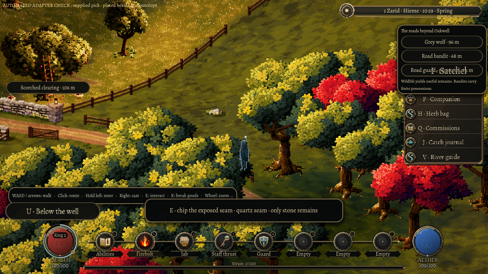
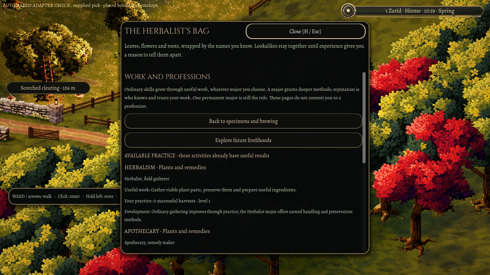
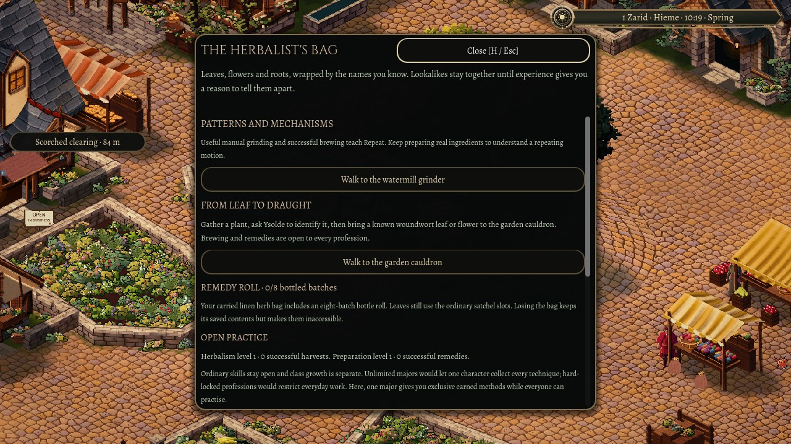

6 November 2026
Fruit, stone, grain and a mill
Fallen fruit, a quartz seam, a blocked road and a watermill: Oakwell's everyday work is starting to answer what the town actually needs.
Windfalls
The orchard east of Oakwell used to have fallen fruit painted on its grass. Now it is real. Walk up to a windfall apple or pear, press E, and that one piece goes into your satchel. Each fallen fruit has its own place in the orchard, and the game remembers when it is gone, so it stays gone after you quit and Continue. A full bag leaves the fruit where it lay.

Picking from the crowns, ripening through the seasons, pressing and orchard workers are all still ahead.
Reading the rock
Mining the outcrops beyond the town now teaches judgement through the work itself. After three successful strikes, you can tell whether an exposed seam still holds mineral or only stone. After six strikes across three outcrops, you can also judge how many workable strikes it has left.

The herb bag's Work and professions page now sets out the livelihoods ahead. It lists twenty-five of them, in twenty-three families. Three ordinary ones work today: gathering plants, preparing them, and mining. The rest are shown as planned, so you can see where the work is going. Everyday skills stay open to everyone, while your one major profession still unlocks the deeper methods.

A road to clear
Odette at the inn is running low on grain. Wenna, the travelling merchant, can tell you why: a storm has brought timber down across her reserve beside the east road. You can go and look, buy a pick from Wenna's own limited stock, and work at the blockage. Clearing it pays nothing by itself. Wenna's cart then has to make the real journey, carrying six measures at a time from a reserve of 48, and the inn buys only what its till can afford. Odette brews with it on her next working day, and households can buy the same grain with their own money.
The reserve does not refill. When it runs dry, the shortage stays visible until the wider county's trade reaches Oakwell, which is separate work still to come.
The mill keeps turning
Grinding dried herbs by hand, or brewing remedies successfully, now teaches something new: Repeat, an understanding of motion that does the same thing again. Once you have learned enough of it, you can build a herb grinder at Oakwell's watermill from two branches and a piece of iron ore. Load it with up to eight real dried plant parts and walk away. Each part takes fifteen minutes of game time, and the powder waits in the tray, keeping where it came from, its quality and any doubt about which plant it was. The mill supplies motion, not ingredients, so an empty grinder makes nothing.

The first time the grinder finishes a part on its own, you learn Automation, once. After that it keeps producing goods without teaching you anything more. Copying and duplication, the next steps along that branch, come later. The mill was accepted before its complete in-game run had finished, so the whole sequence of learning, building, grinding and coming back after Continue still needs that final check.